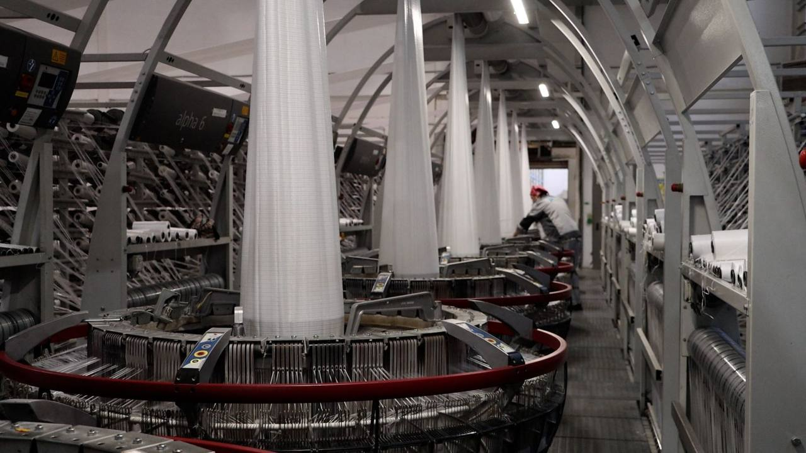

Круглоткацкие станки - общее определение
Deploy testing by gh actions
Круглоткацкие станки — это современные ткацкие машины, которые используются для производства тканей в непрерывном режиме.

Они отличаются высокой производительностью и широко применяются в текстильной промышленности для изготовления различных видов тканей, включая трикотажные полотна, технические ткани и ткани для одежды.
Основные особенности круглоткацких станков:
-
1 Круглая форма › Название “круглоткацкий” происходит от круглой формы основного рабочего органа станка — цилиндрической игольницы (игольного цилиндра). Это позволяет производить ткань в виде непрерывного полотна.
-
2 Высокая производительность › Круглоткацкие станки работают с большой скоростью, что делает их очень эффективными для массового производства.
-
3 Трикотажное переплетение › Эти станки используются для производства трикотажных полотен, которые состоят из петель, а не переплетения нитей, как в традиционных тканях.
-
4 Разнообразие материалов › Круглоткацкие станки могут работать с различными типами нитей, включая шерсть, хлопок, синтетические волокна и их смеси.
-
5 Автоматизация › Современные круглоткацкие станки оснащены системами автоматизации, которые позволяют управлять процессом производства с минимальным участием человека.
Приминение круглоткацких станков
-
Одежда › Круглоткацкие станки широко используются для производства трикотажных тканей, которые применяются в производстве одежды (свитеры, футболки, брюки и т.д.).
-
Технические ткани › Эти станки также применяются для изготовления технических тканей, таких как сетки, фильтры, геотекстиль и т.д.
-
Массовое производство › Благодаря высокой скорости работы и автоматизации, круглоткацкие станки идеально подходят для массового производства.

Преимущества использования круглоткацких станков в производстве
Круглоткацкие станки обладают рядом преимуществ, которые делают их одним из самых популярных и эффективных инструментов в текстильной промышленности.
-
Высокая производительность
- Круглоткацкие станки способны работать с очень высокой скоростью, что позволяет производить большие объемы ткани за короткое время.
- Станки могут работать непрерывно, что особенно важно для массового производства.
- Станки могут работать непрерывно, что особенно важно для массового производства.
-
Экономичность
- Низкие затраты на производство: Благодаря высокой скорости работы и автоматизации, стоимость производства ткани снижается.
- Материальная экономия: Эти станки позволяют минимизировать отходы материала, так как процесс происходит точно и без лишних движений.
- Энергоэффективность: Современные круглоткацкие станки оснащены энергосберегающими технологиями, что снижает общие затраты на эксплуатацию.
-
Автоматизация и удобство управления
- Автоматизированные процессы: Современные круглоткацкие станки оснащены компьютеризированными системами управления, которые позволяют задавать параметры производства (например, плотность, рисунок, цвет и т.д.).
- Минимальное участие человека: Благодаря автоматизации, оператор станка может контролировать несколько машин одновременно, что снижает трудозатраты.
- Простота обслуживания: Многие станки оснащены системой самодиагностики, которая позволяет быстро выявлять и устранять неполадки.
-
Возможность создания разнообразных текстур и рисунков
- Круглоткацкие станки позволяют производить ткани с различными структурами и рисунками, включая гладкие, рельефные, ажурные и другие текстуры.
- Возможность создания сложных узоров и дизайнов, что делает их универсальными для различных видов продукции.
- Использование различных типов нитей (например, разной толщины, цвета или материала) позволяет создавать уникальные ткани.
-
Гибкость и универсальность
- Работа с разными материалами: Круглоткацкие станки могут обрабатывать широкий спектр материалов, включая натуральные (хлопок, шерсть, лен) и синтетические волокна (полиэстер, акрил и т.д.).
- Различные типы тканей: Они подходят для производства как трикотажных полотен (например, для одежды), так и технических тканей (например, сеток, фильтров, геотекстиля).
- Легкая смена настроек: Благодаря автоматизированным системам, переход от одного вида продукции к другому занимает минимум времени.
-
Качество продукции
- Ровная структура ткани: Благодаря точной работе станка, получаемая ткань имеет равномерную плотность и структуру.
- Высокая прочность: Ткани, произведенные на круглоткацких станках, часто обладают высокой прочностью и долговечностью.
- Гладкость и мягкость: Трикотажные полотна, созданные на этих станках, отличаются приятной текстурой и удобством в использовании.
-
Экологичность
- Минимизация отходов: Точная работа станка позволяет свести к минимуму количество отходов материала.
- Использование экологически чистых материалов: Современные станки могут работать с натуральными и экологически безопасными волокнами, что важно для производства “зеленой” продукции.
-
Компактность и мобильность
- Круглоткацкие станки, особенно современные модели, часто имеют компактные размеры, что позволяет размещать их даже в небольших производственных помещениях.
- Некоторые станки могут быть легко перемещены или адаптированы под конкретные производственные нужды.
-
Долговечность и надежность
- Современные круглоткацкие станки изготавливаются из высококачественных материалов, что обеспечивает их долгий срок службы.
- Благодаря прочной конструкции и автоматизированным системам, станки требуют минимального технического обслуживания.
-
Возможность масштабирования производства
- Круглоткацкие станки идеально подходят для масштабирования производства. Компания может начать с одного станка и постепенно увеличивать объемы, добавляя новые машины.
- Это делает их привлекательными как для небольших производств, так и для крупных предприятий.
Подведем итог
Круглоткацкие станки — это высокотехнологичное оборудование, которое сочетает в себе производительность, экономичность, гибкость и качество. Их использование позволяет значительно повысить эффективность производства, снизить затраты и создавать разнообразные ткани для различных целей. Благодаря автоматизации и удобству управления, они стали незаменимым инструментом для современных текстильных предприятий.